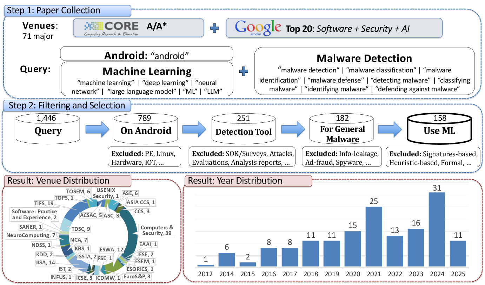

Literature Review
Literature Review Procedure
The figure below summarizes our paper collection, filtering, and selection procedure, along with the venue and year distribution of the selected papers.

List of Venues
The following table lists the 71 venues considered for our systematic literature review.
| No. | Venue | Venue Type | Category |
|---|---|---|---|
| 1 | AAAI Conference on Artificial Intelligence | Conference | ML |
| 2 | ACM Conference on Computer and Communications Security | Conference | Security |
| 3 | ACM Symposium on User Interface Software and Technology | Conference | Software |
| 4 | ACM Transactions on Privacy and Security | Journal | Security |
| 5 | ACM Transactions on Software Engineering and Methodology | Journal | Software |
| 6 | Annual Computer Security Applications Conference | Conference | Security |
| 7 | Applied Soft Computing | Journal | ML |
| 8 | Artificial Intelligence Review | Journal | ML |
| 9 | Asia Conference on Computer and Communications Security | Conference | Security |
| 10 | Automated Software Engineering Conference | Conference | Software |
| 11 | Computers & Security | Journal | Security |
| 12 | Conference on Neural Information Processing Systems | Conference | ML |
| 13 | Conference on Robot Learning | Conference | ML |
| 14 | Empirical Software Engineering | Journal | Software |
| 15 | Engineering Applications of Artificial Intelligence | Journal | ML |
| 16 | European Conference on Artificial Intelligence | Conference | ML |
| 17 | European Conference on Software Architecture | Conference | Software |
| 18 | European Symposium on Research in Computer Security | Conference | Security |
| 19 | European Symposium on Security and Privacy | Conference | Security |
| 20 | Expert Systems with Applications | Journal | ML |
| 21 | Financial Cryptography and Data Security Conference | Conference | Security |
| 22 | Foundations of Software Engineering | Conference | Software |
| 23 | Foundations of Software Science and Computational Structures | Conference | Software |
| 24 | IEEE Computer Security Foundations Symposium | Conference | Security |
| 25 | IEEE International Conference on Data Engineering | Conference | ML |
| 26 | IEEE International Conference on Data Mining | Conference | ML |
| 27 | IEEE International Conference on Program Comprehension | Conference | Software |
| 28 | IEEE International Conference on Software Analysis, Evolution and Reengineering | Conference | Software |
| 29 | IEEE International Working Conference on Mining Software Repositories | Conference | Software |
| 30 | IEEE Software | Journal | Software |
| 31 | IEEE Symposium on Security and Privacy | Conference | Security |
| 32 | IEEE Transactions on Cybernetics | Journal | ML |
| 33 | IEEE Transactions on Dependable and Secure Computing | Journal | Security |
| 34 | IEEE Transactions on Fuzzy Systems | Journal | ML |
| 35 | IEEE Transactions on Information Forensics and Security | Journal | Security |
| 36 | IEEE Transactions on Knowledge and Data Engineering | Journal | ML |
| 37 | IEEE Transactions on Neural Networks and Learning Systems | Journal | ML |
| 38 | IEEE Transactions on Software Engineering | Journal | Software |
| 39 | Information and Software Technology | Journal | Software |
| 40 | Information Fusion | Journal | ML |
| 41 | International Conference on Artificial Intelligence and Statistics | Conference | ML |
| 42 | International Conference on Evaluation and Assessment in Software Engineering | Conference | Software |
| 43 | International Conference on Learning Representations | Conference | ML |
| 44 | International Conference on Learning Theory | Conference | ML |
| 45 | International Conference on Machine Learning | Conference | ML |
| 46 | International Conference on Software Architecture | Conference | Software |
| 47 | International Conference on Software Engineering | Conference | Software |
| 48 | International Conference on Software Maintenance and Evolution | Conference | Software |
| 49 | International Conference on Software Testing, Verification and Validation | Conference | Software |
| 50 | International Conference on the Theory and Application of Cryptology and Information Security | Conference | Security |
| 51 | International Conference on Theory and Applications of Cryptographic Techniques (EUROCRYPT) | Conference | Security |
| 52 | International Conference on Tools and Algorithms for the Construction and Analysis of Systems | Conference | Software |
| 53 | International Cryptology Conference (CRYPTO) | Conference | Security |
| 54 | International Joint Conference on Artificial Intelligence | Conference | ML |
| 55 | International Symposium on Empirical Software Engineering and Measurement | Conference | Software |
| 56 | International Symposium on Software Engineering for Adaptive and Self-Managing Systems | Conference | Software |
| 57 | International Symposium on Software Reliability Engineering | Conference | Software |
| 58 | International Symposium on Software Testing and Analysis | Conference | Software |
| 59 | Journal of Information Security and Applications | Journal | Security |
| 60 | Journal of Machine Learning Research | Journal | ML |
| 61 | Journal of Systems and Software | Journal | Software |
| 62 | Knowledge-Based Systems | Journal | ML |
| 63 | Network and Distributed System Security Symposium | Conference | Security |
| 64 | Neural Computing and Applications | Journal | ML |
| 65 | Neural Networks | Journal | ML |
| 66 | Neurocomputing | Journal | ML |
| 67 | Proceedings on Privacy Enhancing Technologies | Journal | Security |
| 68 | Software and Systems Modeling | Journal | Software |
| 69 | Software: Practice and Experience | Journal | Software |
| 70 | Symposium on Usable Privacy and Security | Conference | Security |
| 71 | USENIX Security Symposium | Conference | Security |